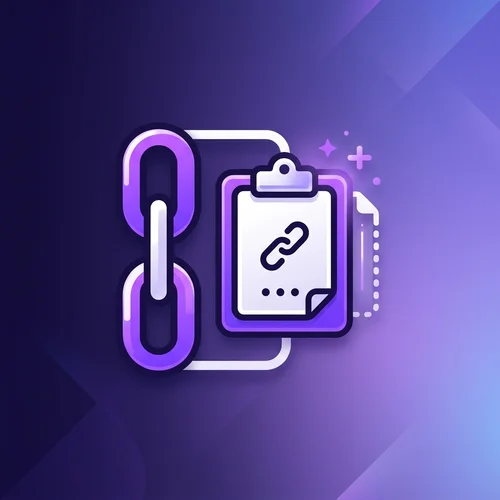
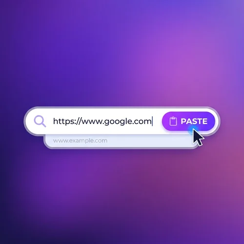
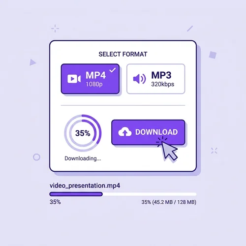
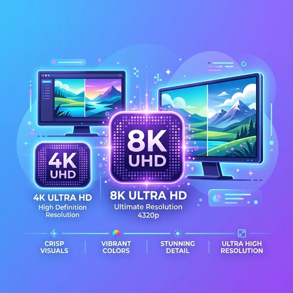
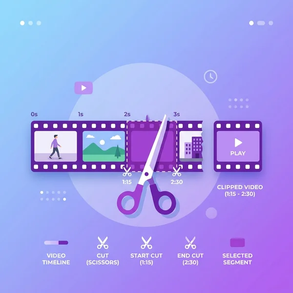

How to Download a YouTube Video with yt4ksaver

Copy the link
Open the video or Short you want on YouTube and copy its URL from the address bar or the Share button.

Paste it into yt4ksaver
Drop the link into the box above and hit Download.

Pick your format
Choose MP4 (video) or MP3 (audio) and your preferred quality, then save the file to your device.
Which YouTube Links Work with yt4ksaver
Works with:
- Standard videos —
youtube.com/watch?v=VIDEO_ID - YouTube Shorts —
youtube.com/shorts/VIDEO_ID - Short links —
youtu.be/VIDEO_ID - YouTube Music —
music.youtube.com/watch?v=VIDEO_ID - Embed links —
youtube.com/embed/VIDEO_ID
Doesn't work with:
- Private or members-only videos
- Paid, rented, or DRM-protected content
- Live streams that are still in progress
- Playlist or full channel pages — open the specific video and use its individual link
- Deleted, invalid, or unavailable video URLs
YouTube Download Formats and Quality Options
Estimates below are based on a 5-minute video; your file size will vary with length and content.
MP3 (Audio)
| Format | Quality | Est. Size | Best For |
|---|---|---|---|
| MP3 | 128 kbps | ~4–5 MB | Podcasts, voice notes, smaller files |
| MP3 | 320 kbps | ~11–12 MB | Music and higher-fidelity listening |
MP4 (Video)
| Format | Quality | Est. Size | Best For |
|---|---|---|---|
| MP4 | 360p–480p | ~15–25 MB | Slow connections, small screens |
| MP4 | 720p | ~35–40 MB | Phones, tablets, everyday playback |
| MP4 | 1080p | ~120–140 MB | Laptops, presentations |
| MP4 | 2K | ~250–550 MB | High-res screens, editing |
| MP4 | 4K–8K | ~550 MB–3 GB+ | Large displays, archiving, professional editing |
Note: available quality depends on what the original YouTube upload provides. 4K/8K only appear when the source video was uploaded in that resolution.
Why Choose yt4ksaver
- Built on an actively maintained extraction engine. yt4ksaver runs on a backend that's updated frequently to keep pace with YouTube's changes — which means fewer "link not supported" errors over time compared to tools running on stale, unmaintained scrapers.
- Real 4K and 8K support. When the source video is available in high resolution, yt4ksaver will offer it — no artificial quality caps.
- No account, no install. Paste a link and go. Nothing to download except the file you actually want.
- No fake download buttons, no forced redirects — just the tool you asked for.

More Than Just Downloads
- Thumbnail downloader — save YouTube thumbnails as JPG, up to 1280×720.
- Subtitle downloader — save available subtitles as SRT, VTT, or plain TXT.
- Clip trimmer — select a start and end point and export just that segment as MP4 or MP3.

Frequently Asked Questions
Is yt4ksaver free?
Yes. yt4ksaver supports free downloads directly in your browser, with no sign-up or software install.
Do I need to install anything?
No. Downloads run entirely in your browser on desktop or mobile.
Is it legal to download YouTube videos?
Downloading YouTube videos may be subject to YouTube's Terms of Service and copyright law. Only save content you own, have permission to use, or are otherwise legally allowed to keep.
What's the highest quality available?
Up to 8K, when the original YouTube video was uploaded in that resolution. If the source doesn't offer 4K or 8K, those options won't appear.
Can I download YouTube Shorts?
Yes — paste the Shorts link the same way you would a standard video link.
Why is there no sound in my downloaded file?
You likely downloaded a video-only version. Check for a muted-speaker icon next to the quality option and choose a version with audio, or download the MP3 separately.
Do you support playlists or full channels?
Not yet. Open the specific video you want from the playlist or channel and use its individual link.
Last updated: {{ last_updated }}